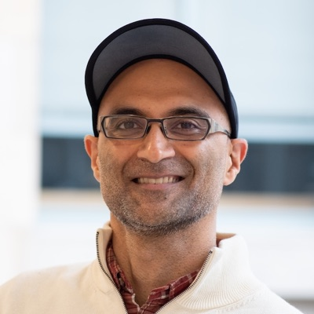

People

Satpreet (Sat) Singh
Principal Investigator · Assistant Professor, School of Data and Information Sciences (from November 2026)
Sat is currently an Alice and Joseph Brooks Postdoctoral Fellow in Kanaka Rajan's AI + Neurotheory Lab at Harvard Medical School and the Kempner Institute. Before that, he spent a year applying AI to biology and medicine in Ankit Patel's Lab at Baylor College of Medicine and Rice University.
He received his PhD from the University of Washington in 2021, where his research bridged machine and reinforcement learning with computational neuroscience. He also holds an MS in Computer Science from Oregon State University and an MS in Electrical & Computer Engineering from the University of Iowa.
He has about five years of industry experience: as a research scientist in machine learning on Meta's Probability team, a data scientist at LinkedIn, a machine learning engineer and product manager at Orbitz.com, and a design engineer at Texas Instruments.
Homepage · CV · Google Scholar · GitHub
Join us
We are building a new interdisciplinary research group at UNC-Chapel Hill. We welcome backgrounds in ML, data science, physics, applied math, CS/engineering, neuroscience, or biology. Strong quantitative skills are essential; experience in neuroscience or biology is a plus but not required. Other or unusual backgrounds are welcome too, especially with relevant real-world experience and strong quantitative skills.
PhD students
We are recruiting PhD students for Fall 2027. Students can join the lab through the SDIS degree programs, such as the PhD in Data Science (apply by Dec. 15, 2026; Dec. 1 for early funding consideration). Joining through other graduate programs on campus may also be possible; details to come.
Undergraduate research assistants and post-baccs
UNC undergraduates who want hands-on research experience, and recent graduates considering graduate school, are welcome to get in touch. You don't need prior research experience, but programming experience (e.g. Python) and coursework in math, statistics, or CS help, and exposure to neuroscience or biology is a plus.
Possible project areas include:
- Agent-based models for neuroscience and biology
- Reinforcement learning and multi-agent RL
- Empirical theory of neural networks and RNNs (science of deep learning)
- Mechanistic interpretability
- Program synthesis
- Dynamical systems analysis
- NeuroAI
- Neural and biological data analysis
Past undergraduate and post-bacc mentees have been first or co-first authors at venues such as CoSyNe, CCN, and NeurIPS workshops (see below).
Interested? Send an email with your CV and a few lines about your interests, and say which position you are asking about. (Please note that there will be a delay in my responses as I transition/move to Chapel-Hill over the next few weeks.)
Mentoring at previous institutions
Students Sat has mentored at Harvard and the University of Washington, with selected research outcomes.
-
Ann Huang Neuroscience PhD student, Harvard · 2024–
Solution degeneracy in RNNs (NeurIPS 2025 spotlight, first author) · InputDSA (ICLR 2026, CoSyNe 2026 oral; co-first) · Curriculum learning in RL (NeurIPS 2026) · RLC 2024 workshop talk
-
Sonja Johnson-Yu CS PhD student, Harvard · 2023–
Electric fish collectives (RLDM 2025 spotlight; co-first) · Zebrafish hunting (CCN 2026; co-first) · Active sensing policies (RLC 2024 workshop talk, first author)
-
Raaghav Malik Visiting undergrad, Caltech · 2025
Zebrafish hunting (CCN 2026 proceedings, NeurIPS 2025 AI4Science spotlight; co-first)
Next: PhD, Stanford
-
Nathan Wu Neuroscience PhD rotation, Harvard · 2025
Collective fish behavior (CCN 2026; co-first) · co-author, zebrafish hunting
-
Linran (Lily) Wei Post-bac RA, Harvard · 2026–
Two NeurIPS 2026 workshop abstracts, first author: Interpretability for Discovery · Developmental Perspectives on AI
-
Kaden Zheng Undergraduate (senior), Harvard · co-mentored with Naomi Saphra and Sonja Johnson-Yu
Source separation for electric fish with PIKAChU and RAIChU (NeurIPS 2025 AI for Animal Communication workshop, first author)
-
Hanson Lu Visiting undergrad, Tsinghua · 2024
Emergent small-group foraging in multi-agent RL (CoSyNe 2025, first author)
Next: PhD, Brown
Also mentored: Raphael Suchomel (research intern, Harvard, 2026–; BS in AI, University of Applied Sciences Upper Austria) · Marco Franco (Neuroscience PhD rotation, Harvard, 2024) · Nathan Davis (undergraduate, UW CSE, 2020)
